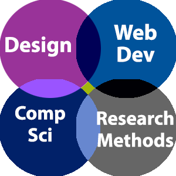

Introductory Programming for Online Social Science Experiments
How do social scientists obtain fast results for their experiments? This course is intended for undergraduate students, graduate students, post-doctoral researchers, and primary investigators who want to crowdsource their social science experiments across a wide range of design complexity. This course will help social scientists build their programming skills and inform them about current crowdsourcing efforts.
This course will be most useful for researchers who have a social science experiment in mind that they want to program and who already have a sense of general programming logic. For example, do you understand what a basic “for loop” or “if/else” statement does? If not, you may want to start with an Introductory Programming in [JavaScript/Matlab/Python/R/etc.] course instead.
This course covers four primary areas: Design, Web Development, Research Methods, and Computer Science. At the intersection of Design and Web Development is a concern about Accessibility and the User Experience, ensuring that a webpage is optimized for all participants/users/respondents. At the intersection of Web Development and Research Methods is our focus on online experiments and the benefits and pitfalls that arise. At the intersection of Research Methods and Computer Science is the increasing complexity offered for more complicated experiments via coding. Finally, at the intersection of Design and Computer Science is the need to make code and interfaces both functional and aesthetically pleasing and intuitive for your users/participants/respondents. This course covers a little bit of each topic area and their intersection without delving fully into any one topic. If that sounds appealing to you, please continuing learning with us.
What are the goals of this course?
The first goal of this course is for you, students, to identify current crowdsourcing platforms and develop basic skills for running online participants using the online crowdsourcing platform, Amazon Mechanical Turk (MTurk). You will learn how to ethically use the MTurk platform as a user and experimenter, write an Institutional Review Board application designed for collecting crowdsourced responses, and recognize the benefits and pitfalls of crowdsourced research.
The second goal of this course is for you to acquire basic programming skills for presenting stimuli and collecting responses using JavaScript or Qualtrics. Through following demos, engaging with tutorials, and reading, writing, and testing code, you will hone your ability to create your own functions or plugins that will allow you to designate trial sequences and more.
The third and final goal of this course is for you to apply what you have learned in terms of programming and experimental skills by posting your own social science experiment online.
In short, you will 1) learn about and apply your knowledge of crowdsourcing and 2) read and write code for online experiments.
How will you be assessed?
This is an unofficial course or workshop offered for interested researchers. Nonetheless, there are some assessments so that you can test yourself and encode the skills you have learned.
Every tutorial has quizzes that should act as formative assessment testing how well you encoded the material that was discussed. Every week has suggested assignments and readings, such as writing an IRB, testing your code on MTurk sandbox, obtaining feedback on your experiment, posting your own code, and interpreting your output file. Since this is not an official course/workshop and the course is self-paced, the instructor has no control over whether you actually do these assignments or take the quizzes seriously. However, the ultimate goal of this course is to help you, the student, obtain enough knowledge and experience with programming an online social science experiment so that you can post your own experiment. All of the assignments and videos/tutorials are designed with that in mind.